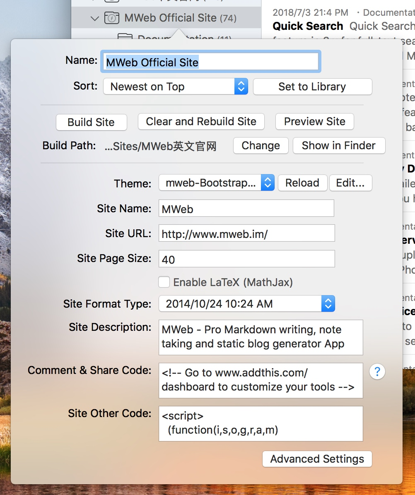

MWeb's static website category
In MWeb's document library, there are two categories, one is the general category, and the other is the static website category. You can add a static website category directly, or right click in the category of the top level of the general category, select Edit, and then click the Set to Site button in the interface that comes out.
Website category can set some things related to the website. The setting interface is as follows:

The settings in the above picture should not be difficult to understand. If you want to generate a static website, after setting it, click the Build Site button. Before generating, please make sure that there is at least one article in your category. You can also right click to select the relevant menu item to generate the website. If you have modified the site template, use the Clear and Rebuild Site button. Of course, you can use this button to clean up and regenerate your website at any time.
It can be seen that generating a static website in MWeb is very simple. Write a good article, then classify it into a static website category, then right-click on the static website category and select Generate Website. Of course, you can preview it first.
Two article type in MWeb
MWeb and Wordpress and other blogs have the same structure, divided into two articles type: general article and Page. Page is used to do pages like about page, contact page, etc.
As shown in the figure below, it is very simple to set the document in the MWeb document library to page. Click top of the information bar and check Is Page. The HTML file name is used to set the name of the generated HTML file. For example, the article in the above image will generate mweb-static-blog.html. general article The generated HTML file name is also set here.
Setting the main menu of the website
You can click the Advanced Settings button in the website settings interface to open the website extension to set the main menu of the website. You can also open it from Preferences - Extension, then select the website category to be set and select the Site Menu. This tab, as shown below:
You can add, edit, and delete menus, or drag and drop to adjust the order. Notice: the MWeb-Foundation-Book template does not support the website menu.
Reference between documents
It is very simple to reference other documents in MWeb. In the document list, right-click the document you want to reference and select Copy as shown below.
Then paste the location of the document to be referenced CMD + V, and MWeb will generate [How to use Publish Script to Publish website.](how_to_use_shell_script.html). If you hold down the CMD key and click, the referenced document will be opened.
The Generate Static Website feature handles this reference very well and generates related web links.
Add the Read More Comment
For Read More Comment, please see the image below. You can use the menu: Actions - Insert Read More Comment to insert more readings, and then note that this comment must add a empty line in top and bottom, as follows Figure.

Configuring website publishing scripts
This feature, MWeb for Mac 2.2.3, is designed to make the static website experience in MWeb reach the "new document and edit" - "right click and choose to execute the release script" as a simple process. Avoid the same as before, after you generate the website, you need to click the command to publish.
For detailed instructions, please refer to this article directly: How to use Publish Script to Publish website.